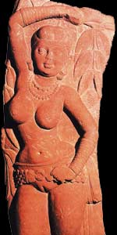

Ведійська міфологія
Ведійська міфологія - сукупність міфологічних уявлень водійських аріїв; зазвичай під ведійської міфологією розуміють міфологічні уявлення аріїв періоду створення вед, а іноді і періоду створення брахман, прозових коментарів до вед, і упанішад, таємних навчань філософсько-релігійного характеру, генетично пов'язаних з ведами, але відображають, по суті справи, вже іншу культурну традицію . Хронологічно ведийская міфологія відноситься до епохи між серединою другого і серединою першого тисячоліття до нашої ери, коли первіснообщинний пристрій водійського суспільства перебувало вже на стадії розкладання і поступово формувався уклад, який був характерний для військової демократії. Джерела ведійської міфології: чотири найдавніших зборів вед; брахмани до відповідних ведам (цінні відомості про ритуал, інтерпретації його потаємного сенсу і символіки, ряд міфів і переказів); араньяки (тексти, пов'язані з брахманами) і упанішади.
Ці джерела відносяться до класу шрути - «почуте», тобто одкровення. Ведийская міфологія передавалася усно, і «божественному» характеру текстів відповідала особлива роль мови і пам'яті, що протистоять забуттю і нечленороздільні хаосу. Тексти смріті - «запоминаемое» (висхідний до авторитетів) включають сутри, в яких мова йде про жертвопринесення, домашніх обрядах, мифологізованному законодавстві і т.п. Деякі відомості про ведійської міфології можуть бути вилучені з більш пізніх індуїстських текстів, генетично пов'язаних з ведійської традицією, і навіть з буддійських текстів. Ведизм ні общеиндийской релігією, його дотримувалася лише група індоарійських племен, які заселяли Східний Пенджаб і Уттар-Прадеш, вона ж є творцем Рігведи і інших водійських збірок.
Однією з характерних рис ведійської релігії є політеїзм - поклоніння багатьом богам, яких зазвичай наділяють властивостями людини. Головним богом вважався Індра - бог грози, могутній воїн. Варуна - охоронець світового порядку і справедливості. Агні - бог вогню і захисник домівки. Індієць епохи вед обожнював сили природи, одушевляв рослини, гори і річки. Пізніше на основі цього оформилося вчення про переселення душ. Щоб завоювати прихильність богів, індійці приносили їм жертви, молили про допомогу, потомство і багатстві. Ведийские твори малюють багатий духовний світ індійців, вже тоді створювали складні космогонічні уявлення. Вже тоді людина намагалася в міфологізованої формі пояснити причини виникнення світу і всього живого на землі.
Ось основні думки водійських гімнів:
Немає нічого вічного, навіть боги не вічні.
Творцем світу було якесь абстрактне божество, основа буття - безособова.
Усе, що існує виникло з велетня Пуруші.
До вищого (божественного) рівню ведійської міфології прийнято відносити 33 бога (333 в деяких брахманів; в окремих джерелах - 3306, 3339), причому саме це число - істотна константа, під яку «підганяється» кількість персонажів. Ці 33 бога діляться на земних, атмосферних (проміжних) і небесних.
Іноді богів членують на групи (8 васу, 11 Рудру, 12 адітьїв і ще два божества - Ашвини або Дьяус і Притхиви, або Індра і Праджапаті), одні проти одних за тим же троїстого принципом. Незважаючи на окремі відхилення в складі груп, ядро ??залишається стійким: Притхиви, Лгні, Бріхаспаті, Сома, Сарасваті та ін. - земні; Індра, Тріта Аптья, Апам Напата, матарішван, Ахи Будхнья, Аджа Екапад, Рудра, Марути, Ваю, Вата, Парджанья, Anac - атмосферні; Дьяус, Варуна, Мітра і інші Адитьи, Сурья, Савитар, Пушан, Вішну, Вівасват, Ушас, Ашвини - небесні. Пізніші тексти пропонують інші інтерпретації тих же груп: васу - вогонь, земля, вітер, повітря, сонце, небо, місяць, зірки; Рудри - 10 органів життєдіяльності і атман; Адитьи - 12 місяців року. Подібні членування відбивають спроби встановлення відповідностей між архаїчними космологическими схемами тричленної всесвіту і складом пантеону (пізніше - основними елементами макро-і мікрокосму). В основі іншої класифікації богів лежить розрізнення трьох соціальних функцій: магічно-юридичної (Адитьи і перш за все Варуна і Мітра - жерці), військової (Індра і Марути - воїни), родючості (Ашвини - виробники матеріальних благ). Ця класифікація підкріплюється текстовими послідовностями, в яких за Варуною і Мітрою слідують Індра і Марути, Ашвини, Пушан і т.д.
Ядро ведійської міфології утворюють космогонічні міфи, представлені поруч варіантів. Початковий стан, відповідне хаосу, описується як повна відсутність елементів всесвіту і основних протиставлень, що обумовлюють її функціонування. «Тоді не було ні сущого, ні позбавленого буття. Не було ні повітряного простору, ні неба над ним ... Тоді не було ні смерті, ні безсмертя, не було різниці між днем ??і вночі ... Все це невиразно текучо »(Рігведа Х 129); разом з тим підкреслюється моністичний принцип ( «Без подуву дихало Єдине, і нічого крім нього не було»).
Початок творіння дали води, з них народилася всесвіт, вони її основа. З вод виникли земля (зазвичай шляхом згущення вод, пізніша версія - шляхом пахтанья океану; згущення ж вод, затвердіння їх - результат спільної діяльності девов і асуров) і їжа. Інший варіант - походження з вод яйця (зокрема, золотого), з якого через рік з'явився деміург Праджапаті або бог-творець Брахман. Яйце розкололося на золоту і срібну половини, з них виникли відповідно небо і земля. Деякі тексти відображають версію, згідно з якою земля та сонце (вогонь) виникли з лотоса, що плаває у водах (також за участю Праджапати). Ця остання версія, мабуть, має свої витоки в космогонічних уявленнях автохтонного населення Індії. Також відомі й інші пізні варіанти міфу про творіння. Мова йде перш за все про створення всесвіту з членів тіла першолюдини Пуруші (Рігведа Х 90; Аюрведа Х 2) - як природного, так і соціальної організації ( «Коли розділили Пурушу, ... брахманом стали його уста, руки - кшатрії, стегна його - вайшьей, з ніг виник шудра. Місяць народилася з думки, з очей виникло сонце, ... з голови виникло небо ... »); в основі цього варіанта лежить практика древніх людських жертвоприношень.
У центрі ведійської міфології - міфи про «другому творінні», точніше кажучи, основний міф про боротьбу Індри з його противником, які втілюють сили хаосу, невизначеності, деструкції, і створення нової всесвіту, організованої на інших засадах. Як супротивник Індри виступають перш за все демони - чудовиська Вритра, Вала, рідше Шушня, Пані та інші, що приховують худобу (в скелі, в печері), сонце, ранкову зорю або сковують води. Перемога Індри призводить до звільнення худоби, вод і т. Д., Розчленування чудовиська на частини, відтворення космосу, зокрема в тому його аспекті, який пов'язаний з родючістю, багатством, потомством, з переходом від екстенсивного використання природи до інтенсивного, тобто до специфічно ведийскому соціальному космосу. Ведийская міфологія, як вона відображена в найдавніших текстах, передбачає вільну композицію міфів на основі всієї сукупності міфопоетичних знань; кожен сюжет, мотив, атрибут міфологічен в принципі і не вимагає для свого пояснення спеціального міфу в сталій, закінченою формі. Історико-культурне значення міфології Стародавньої Індії надзвичайно великий.
Індуїстська міфологія бере початок з I тисячоліття нашої ери в індо-арійської ведичної культури через брахманізм, що випробував вплив буддизму. Включає в себе безліч навчань, що відбивають монотеїстичні, пантеистические, політеїстичні і інші релігійні уявлення. Слово "індуїзм" визначає в науковій літературі і публіцистиці найбільш древні традиційні форми релігійної системи індійців на відміну від інших етичних і релігійних навчань - буддизму, джайнізму і ісламу. Воно виникло не в середовищі корінних жителів Індії, а в середовищі тих воєначальників і правителів сусідніх країн, які сповідували іслам, і, починаючи з X століття, приводили на землі Індії свої загарбницькі армії. Першою областю, де стало поширюватися їх вплив, були північно-західні землі цієї країни. Від назви головної водної артерії цих земель - річки Синдху-Хінд-Інд і відбулися слова Індія і хінді (індуїзм). Самі індійці називають свою країну Бхарат, а індуїзм визначають як дхарму, або сантана-дхарму, тобто релігійний закон. Дхарма охоплює собою всю складну систему релігійних, етичних і соціально-правових встановлень, які поступово складалися в середовищі населення країни за останні п'ять тисяч років.
Звичайно ж, в індуїзм увійшли багато ідей ведизму. Але треба мати на увазі, що індуїзм - розвинена релігія нового етапу в житті давньоіндійського суспільства. В індуїзмі на перший план висувається бог-творець, встановлюється сувора ієрархія в пантеоні. Особливу роль стали грати культи богів Брахми, Вішну і Шиви. Так складається тріада (тримурти) цих головних божеств, сприймається як прояв єдиного вищого божества. Брахма вважався творцем і управителем світу, йому належало і встановлення на землі соціальних законів (дхарма), розподіл на варни. Поступово в тримурти особливу роль стали грати Вішну - бог-охоронець і Шива - бог-руйнівник, що призвело до появи двох основних напрямків в індуїзмі - вишнуизма і шиваизма. Цей поділ був закріплений в текстах пуран - головних пам'яток індуїстської думки, які склалися в перші століття нашої ери. Поряд з індоарійських віруваннями обидва напрямки індуїзму увібрали в себе і вірування неарійського, перш за все дравідійської, населення. Включення в індуїстську релігійну систему різних культів, їх співвіднесення з образом Вішну здійснювалося завдяки концепції аватар - вченні про те, що бог сходить в світ, перевтілюючись щораз в новий образ. Культ бога Шиви, який уособлює собою родючість, аскетизм, він є покровителем худоби, а також в образі танцюриста-шамана, несе не тільки руйнування, але і узагальнення різних місцевих вірувань.
Релігійні концепції індуїзму дуже впливали на різні сторони життя давньоіндійського суспільства, в тому числі і на соціальну сферу. Система варн вважалася священною, і від віруючих потрібно суворе виконання вже визначеного боргу і соціальних обов'язків. Релігійно-філософський твір Бхагавадгита, що представляє собою частину епічної поеми Махабхарата, написано у формі діалогу воїна Арджуни з Крішною - земним втіленням верховного бога. У діалозі порушені теми долі людини, високої моралі, мирського і божественного. У центрі поеми опис шляхів, які приведуть віруючого до релігійного звільнення, головним вважається любов до Бога (бхакті). Це підтверджує той факт, що індуїзм, як і будь-яка інша релігія, містив у своїй основі ідею про порятунок - релігійному звільнення - нірвані, досягти якої можуть лише монахи, але прагнути до неї повинен кожен.